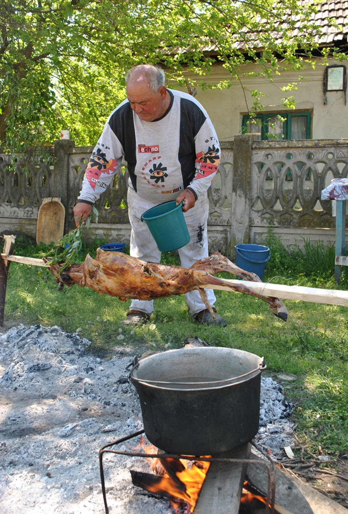
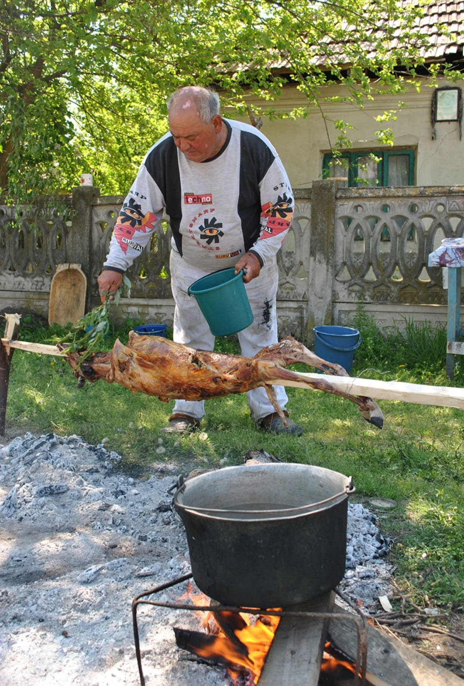

Gurbanul de Sfântul Gheorghe - Băbeni Rudarii din Băbeni marchează sosirea primăverii prin Gurbanul de Sf. Gheorghe, un ritual complex ce include sacrificarea simbolică a unui miel. Ceremonialul începe dis-de-dimineață cu rugăciuni tradiționale, urmate de pregătirea mesei festive unde întreaga comunitate se adună. Specific acestei zone este împodobirea porților cu crengi de salcie și flori de primăvară, simbolizând renașterea naturii și purificarea spirituală.
Primăvara renaște cu forță la Băbeni! În zori, porțile caselor sunt împodobite cu crengi de salcie și flori, iar întreaga comunitate se adună pentru un ritual profund: sacrificiul simbolic al mielului. După rugăciuni și binecuvântări, urmează o masă festivă plină de bunătăți. Atmosfera e una de speranță și purificare – un nou început pentru toți.


Gurbanul Mare - Frâncești. În comuna Frâncești, Gurbanul Mare este cel mai important eveniment al anului pentru rudari. Vechi de peste 300 de ani, acest ritual include procesiuni ceremoniale în care bătrânii comunității conduc tinerii spre râul din apropiere pentru ritualuri de purificare. Bucatele tradiționale includ "coliva rudărească" și "pâinea gurbanului", preparate doar de femeile mai în vârstă. Seara culminează cu dansuri tradiționale și muzică autentică rudărească.
Cel mai vechi și important eveniment al rudărilor din zonă! De peste 300 de ani, acest ritual marchează inițierea tinerilor prin procesiuni până la râu pentru purificare. Femeile vârstnice pregătesc cu grijă coliva rudărească și pâinea gurbanului. Seara, dansurile și muzica tradițională creează o atmosferă plină de emoție și continuitate.


Gurbanul Primăverii - Budești Celebrarea din Budești este cunoscută pentru ritualurile de mulțumire pentru rodnicia pământului. Rudarii, meșteșugari în prelucrarea lemnului, aduc ofrande simbolice și pun accent pe transmiterea meșteșugurilor tradiționale către tineri. Evenimentul include demonstrații de sculptură în lemn, împletituri din nuiele și prezentarea obiectelor tradiționale confecționate de meșterii locali, urmate de un ospăț comunitar.
Un omagiu adus pământului roditor și meșteșugurilor tradiționale. Rudarii din Budești, pricepuți în lemn, oferă demonstrații de sculptură, împletituri din nuiele și obiecte artizanale. E o sărbătoare a muncii și a transmiterii de valori – încheiată cu un ospăț generos și povești spuse în jurul mesei.

Festivalul Gurbanului Rudaresc - Horezu Festivalul din Horezu transformă ritualul tradițional într-o celebrare mai amplă, deschisă și vizitatorilor. Reunește rudari din tot județul pentru a prezenta bogăția culturală a comunității: portul tradițional, gastronomia specifică, dansurile și cântecele autentice. Festivalul include și un târg de meșteșuguri rudărești, unde se pot admira și achiziționa obiecte din lemn lucrate manual, împletituri și alte creații tradiționale.
O celebrare deschisă tuturor! Orașul devine centrul cultural al rudărilor din județ, prezentând porturi tradiționale, bucate alese, târguri de meșteșuguri și spectacole autentice. Este momentul ideal să cunoști frumusețea acestei culturi, să dansezi, să guști și să cumperi obiecte realizate manual.
Gurbanul de Sânziene - Orlești În Orlești, Gurbanul coincide cu sărbătoarea Sânzienelor, creând un sincretism unic între tradiția rudărească și credințele populare românești. Ceremonialul include culegerea de plante medicinale în zori, împletirea coronițelor de sânziene și ritualuri specifice pentru protecția gospodăriilor. Seara, tinerii aprind focuri ritualice în jurul cărora se dansează până târziu, într-o celebrare a solstițiului de vară.
Magia verii și a naturii se împletește cu credințele străvechi. Tinerii culeg plante medicinale, împletesc coronițe de sânziene și aprind focuri rituale în jurul cărora dansează până târziu în noapte. Este un moment de vis, în care pământul și cerul parcă se ating, iar tradiția prinde viață.


Gurbanul de Sfântul Ilie - Măldărești Comunitatea rudărească din Măldărești organizează un Gurban special dedicat protecției împotriva calamităților naturale. Ritual complex ce combină rugăciunile pentru protecție cu practicile tradiționale de prevestire a vremii pentru sezonul agricol următor. Specific acestei zone este procesiunea cu obiecte sacre rudărești păstrate în familii de generații, urmate de o masă rituală unde se servesc bucate tradiționale precum "zama de miel" și "plăcinta gurbanului".
Măldărești Un Gurban al protecției și prevestirii vremii. Comunitatea aduce la lumină obiecte sacre rudărești, transmise din generație în generație. Masa rituală e bogată, cu preparate specifice: "zama de miel" și "plăcinta gurbanului". Toți cei prezenți participă cu gânduri bune și speranță în recolta ce va veni.
Gurbanul de Toamnă - Tomșani În Tomșani, Gurbanul de Toamnă marchează sfârșitul recoltei și pregătirea pentru iarnă. Ceremonialul include aducerea ofrandelor din primele roade ale toamnei și ritualuri de mulțumire pentru belșug. Specific acestei comunități este "ritualul celor șapte bucate", în care se pregătesc șapte feluri tradiționale ce sunt întâi oferite simbolic strămoșilor, apoi împărtășite cu întreaga comunitate.
Ritualul belșugului și al mulțumirii. După recoltă, comunitatea aduce primele roade ale toamnei și pregătește „Ritualul celor Șapte Bucate” – un festin simbolic oferit întâi strămoșilor, apoi împărțit cu toată suflarea satului. Un moment emoționant și plin de recunoștință.
Închiderea anului ritual rudaresc - Pietrari Ultimul Gurban al anului în Pietrari marchează încheierea ciclului ritual și pregătirea pentru perioada de iarnă. Ceremonialul începe cu un ritual de purificare a spațiului comunitar, urmat de rugăciuni pentru protecția comunității în timpul iernii. Bătrânii satului transmit povești și legende rudărești tinerilor, întărindu-se astfel legătura între generații. Evenimentul se încheie cu un ospăț comunitar și promisiunea reîntâlnirii în primăvară.
Ultimul Gurban din an. Spațiul comunitar este purificat prin rugăciuni, iar bătrânii satului spun povești și legende rudărești, întărind legătura dintre generații. Masa de final simbolizează unitatea și promisiunea reîntâlnirii în primăvară.
 
